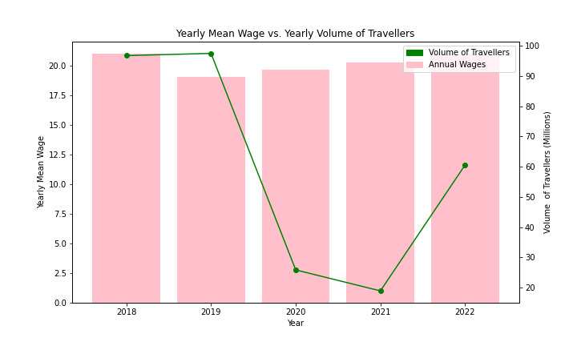

<!DOCTYPE html>
<html>
<head>
    <title>Tourism and Wages in Canada/title>
    <!-- Add any necessary CSS or stylesheets here -->
</head>
<body>
    <h1>Tourism & Wages in Canada</h1>

    <div class="infographic-text">
    <h2>Introduction</h2>
    <p>Tourism in Canada changes every year, it has changed a lot in recent years especially, because of COVID-19. Wages fluctuate over the years as well. This infographic explores the correlation between tourism and the wages of workers in tourism related fields. These include retail, service, hospitality, transportation, and many others. <p>
    
    <!-- Insert your interactive Plotly graphs here -->
    <div class="plotly-graph">
        <!-- Replace 'travellers_line_graph.html' with your actual HTML file -->
        <iframe src="travellers_line_graph.html" width="800" height="400"></iframe>
    </div>

    <div class="infographic-text">
    <p>This graph shows the amount of travellers entering Canada monthly for the years 2018-2023. It includes data for the entire coutry as well as data for each region individually. As seen on the graph, certain regions of Canada are more popular tourist destinations than others.<p>

    <div class="plotly-graph">
        <!-- Replace 'your_plotly_graph_2.html' with your actual HTML file -->
        <iframe src="wages_scatter_plot.html" width="800" height="400"></iframe>
    </div>

    <div class="infographic-text">
    <p>The graph above displays the annual median wage for a variety of tourism related jobs. The medians tend to be quite varied, even within thier own year and job. The diffirence in median between the year is not exceptionally dramatic.<p>

    <!-- Insert your interactive Plotly graphs here -->
    <div class="plotly-graph">
        <!-- Replace 'your_plotly_graph_3.html' with your actual HTML file -->
        <iframe src="seasons_pie_chart.html" width="800" height="400"></iframe>
    </div>

    <div class="infographic-text">
    <p>This graph show the seasonal entrane of travellers into Canada. As seen from the graph, the most tourists visit Canada in the Summer season. This makes sense because all of the other seasons are quite chilly and most people tend not to choose to suffer on their vacations. There are however still quite a lot of visitors in the winter which can be explained by imports into the country, for example fruits and vegetables. Not much produce can be grown in the country in winter so it makes sense that more produce would have to be imported then.<p>

        <!-- Insert your Matplotlib graph as a PNG image here -->
    <div class="matplotlib-graph">
        <!-- Replace 'your_matplotlib_graph.png' with your actual PNG file -->
        
    </div>

    <div class="infographic-text">
    <p>The graph above shows the annual median wages of all of the job impacted by tourism as well as the annual volume of traveller entering Canada. It does not appear that there is a strong correlation between the wages and amount of tourism in the coutry however, there is probably more of a correlation between the amount of jobs available in fields realted to tourism and tourism itself.<p>

    <!-- Add any additional content or text here -->

    <h2>Conclusion</h2>
    <p>Finally, even though the amount of tourism decreased severely over the course of the pandemic, the wages of thos working jobs impacted by tourism did not drop drastically. They were a little bit lower than in previous years, but they did not drop an extreme amount. This means that while there is a bit of a connection between tourism and wages, it is not large enough to have a severe influence over the wages of those working tourism related jobs.</p>
    </div>
    
</body>
</html>
